tbl.now provides an extension of the tibble() for storing, validating, and manipulating epidemiological nowcasting data. It standardizes the representation of event dates, report dates, strata, temporal covariates, etc and in a way that is compatible with many frameworks including diseasenowcasting, epinowcast, NobBS, surveillance, EpiNow2, and more.
Specifically a tbl_now is a data structure that keeps track of the following attributes relevant for a nowcasting excercise so that all dplyr transformations (i.e. the ones from tidyverse) keep track of the relevant nowcasting variables:
| Argument | What it records | |
|---|---|---|
|
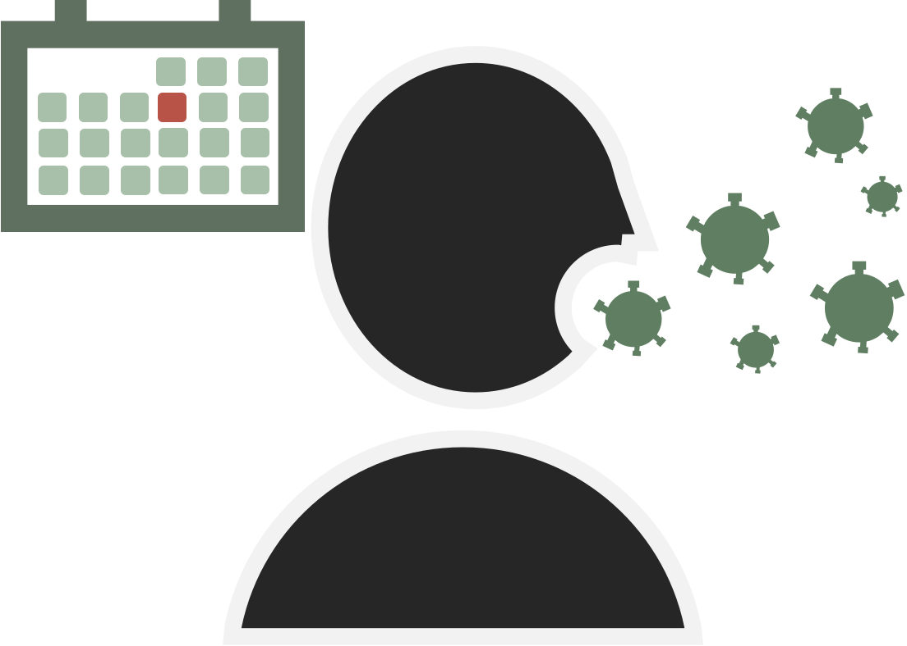 |
event_date
|
The column storing event dates; i.e. when the epidemiological phenomenon of interest happened (symptom onset, hospitalisation, death, …). Required. |
|
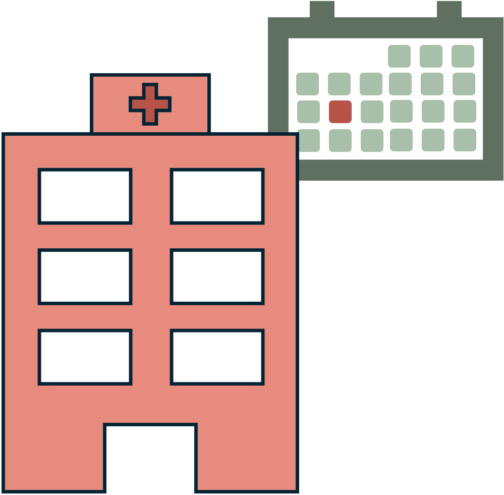 |
report_date
|
The column storing report dates; i.e. when that event became known to the surveillance system. Required, unless it is reconstructed from delay.
|
|
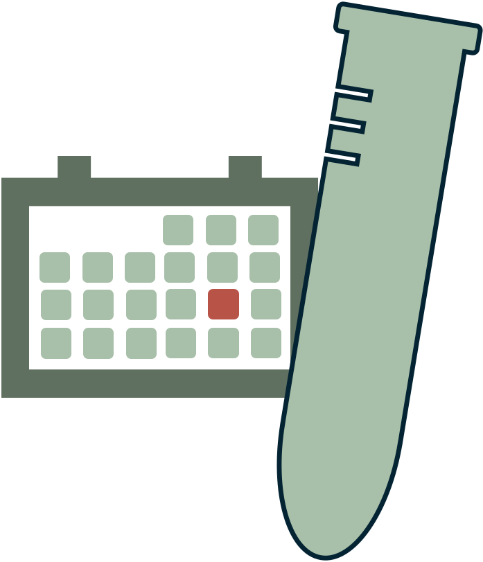 |
validation_date
|
An optional third date indicating when the report was resolved (see validation_type). Optional.
|
|
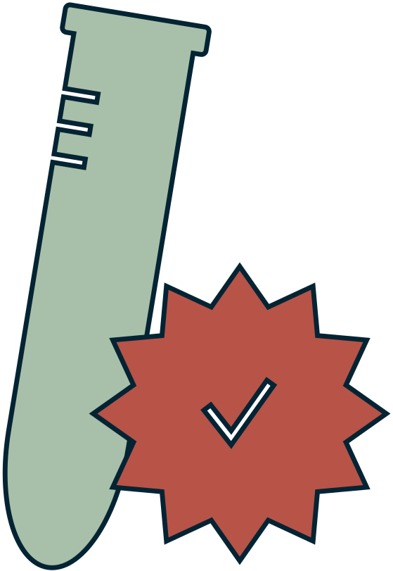 |
validation_type
|
What the validation date resolved to. Only confirmed, retracted, pending or NA are ever stored; use validation_levels for data recorded in other words. Optional.
|
validation_levels
|
A named dictionary translating the labels in validation_type into those four, e.g. c(confirmado = “confirmed”). Optional.
|
|
|
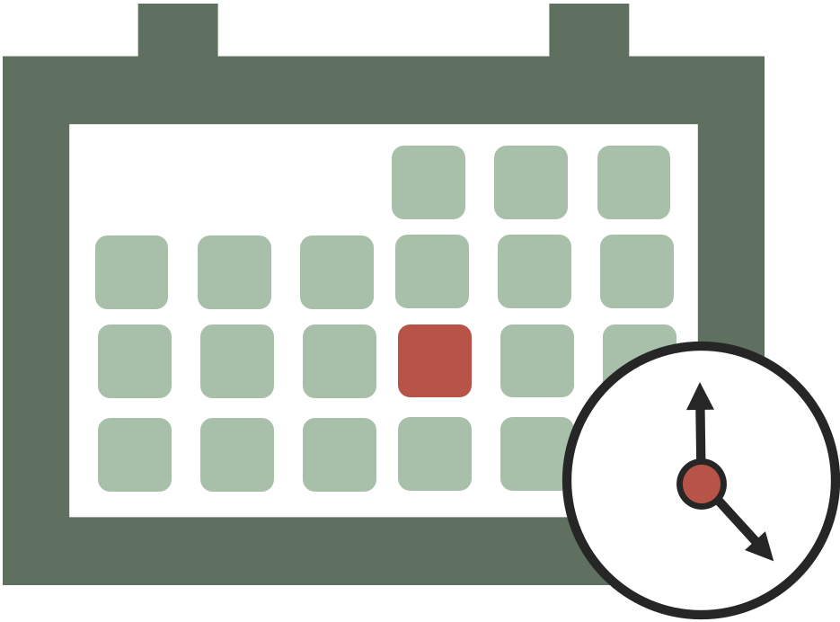 |
now
|
The date the nowcast is anchored to — “today” from the model’s point of view. Optional; defaults to the latest date. |
|
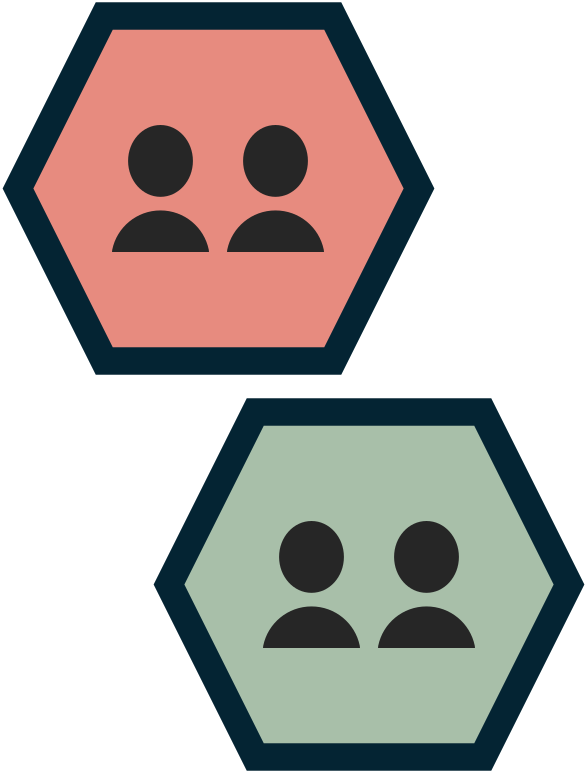 |
strata
|
Columns you want a separate nowcast for (e.g. gender, region). Optional. |
|
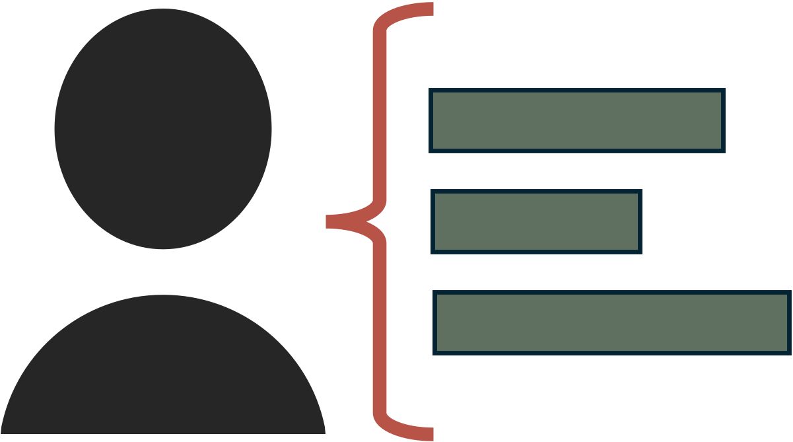 |
covariates
|
Columns that inform the nowcast but that you do not want it broken down by (e.g. temperature or precipitation). Optional. |
case_count
|
The column holding the counts when the data is given as aggregated (rather than line-list). Optional. | |
|
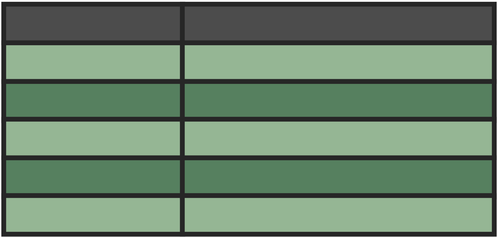 |
data_type
|
Whether the data represents a linelist (each row is a case), count-incidence(each row is a collection of cases per event-report date) or count-cumulative(each row is the cummulative number cases for that event accumulating in the report axis). Optional; inferred by default.
|
|
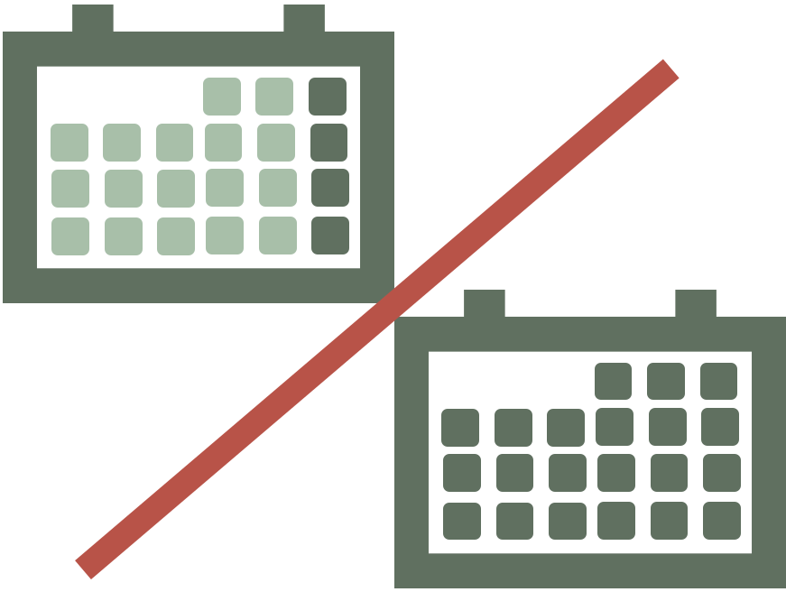 |
event_units, report_units, validation_units
|
The time grid each date lives on: days, weeks, months, years or numeric. Optional; inferred (“auto”) by default.
|
|
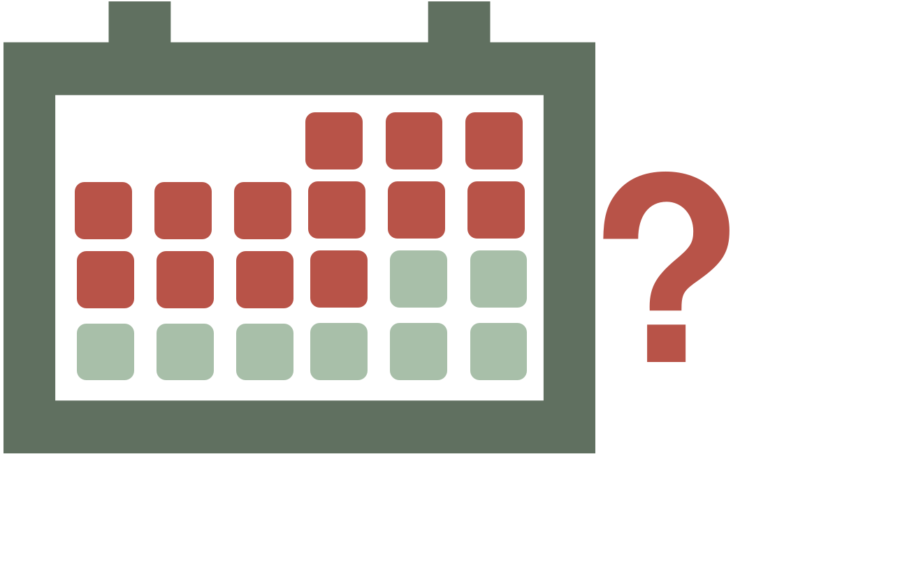 |
is_censored_report
|
Flags report dates that are only an upper bound, e.g. a batch or back-fill dump. Optional. |
is_censored_validation
|
The same on the validation axis: flags rows whose validation delay is a bound rather than a measurement. Optional. | |
|
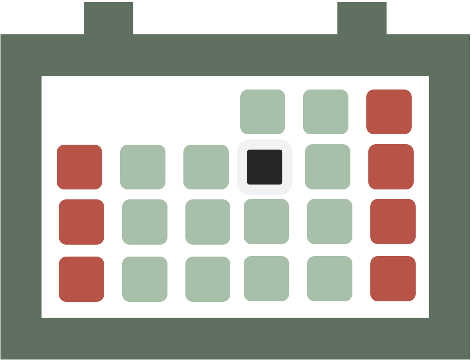 |
t_effects
|
Columns holding temporal effects (day of week, holidays, …) that some models can use. Optional. |
You can specify an object as a tbl.now with the tbl_now command:
library(dplyr)
library(tbl.now)
data(denguedat)
#Here we use just a few dates for the example
denguedat <- denguedat |>
filter(onset_week >= as.Date("2005/01/01")) |>
filter(onset_week <= as.Date("2005/10/01") & report_week <= as.Date("2005/10/01")) |>
tbl_now(
report_date = report_week,
event_date = onset_week,
strata = gender
) Once transformed, it can help you diagnose data problems or modeling requirements with your database:
autoplot(denguedat)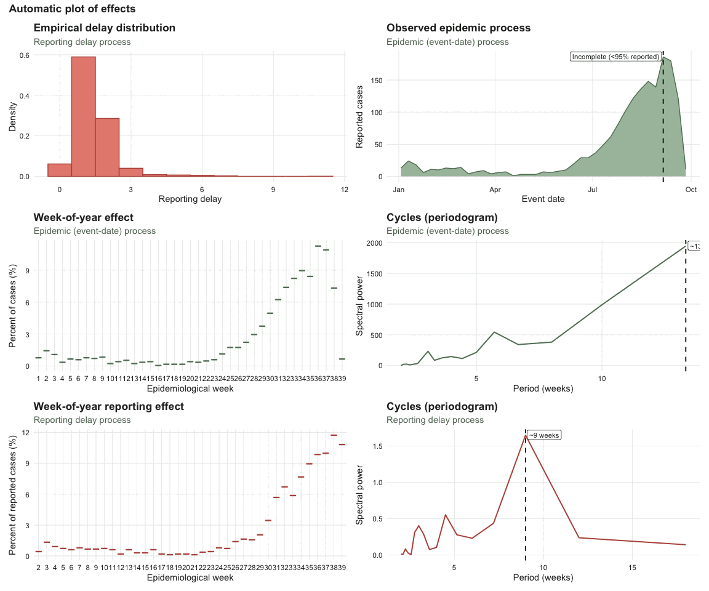
And it can be used to run any of multiple nowcast libraries through the engine() and run_nowcast specifications. For example, baselinenowcast:
dengue_nowcast_1 <- denguedat |>
run_nowcast(engine = engine_baselinenowcast())
autoplot(dengue_nowcast_1)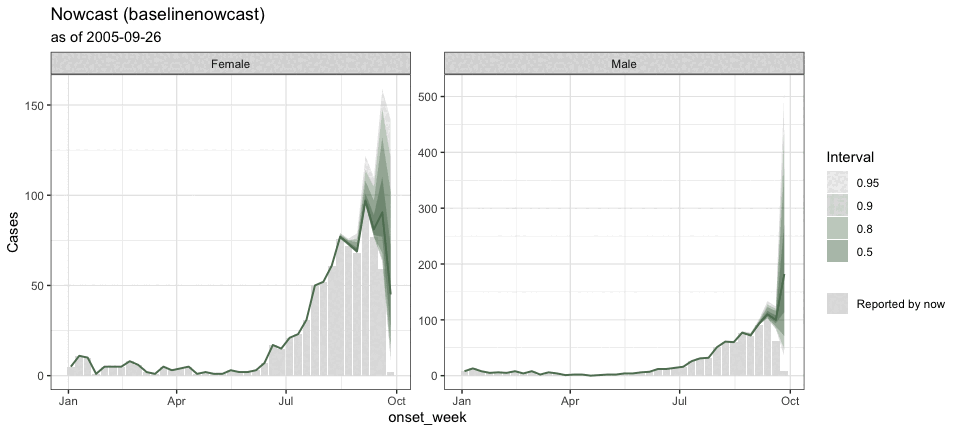
or diseasenowcasting:
dengue_nowcast_2 <- denguedat |>
run_nowcast(engine = engine_diseasenowcasting())
autoplot(dengue_nowcast_2)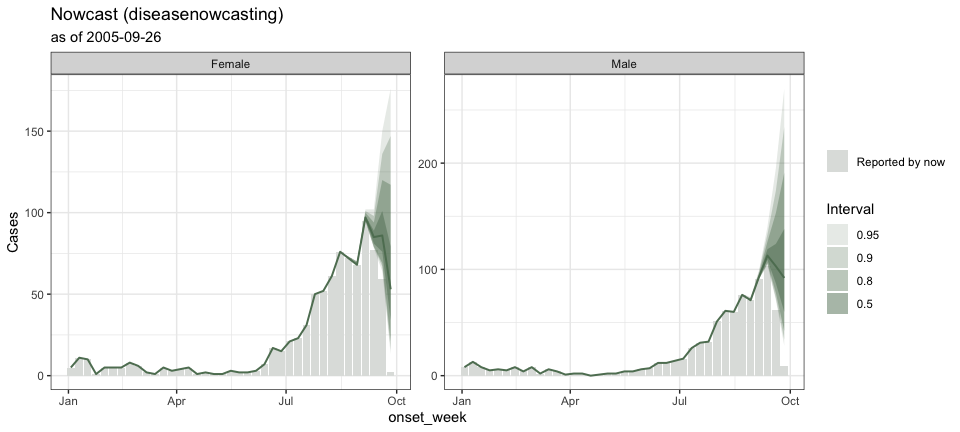
It can also generate ensemble nowcasts combining multiple engines or multiple realizations from the same engine:
dengue_ensemble <- nowcast_ensemble(
baselinenowcast = dengue_nowcast_1,
diseasenowcasting = dengue_nowcast_2
)
autoplot(dengue_ensemble)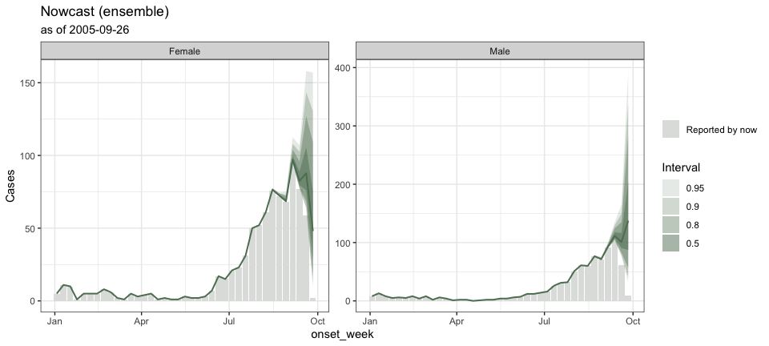
If this seems exciting to you, install the development version from GitHub:
# install.packages("pak") # <- uncomment if you do not have `pak`
pak::pkg_install("RodrigoZepeda/tbl.now")and checkout our articles starting with the Introduction:
Learning more
- Introduction vignette: https://rodrigozepeda.github.io/tbl.now/articles/tbl.now.html for the full anatomy of a
tbl_now, data types, and temporal effects. - End-to-end tutorial on real, messy surveillance data — cleaning, diagnostics and nowcasting: https://rodrigozepeda.github.io/tbl.now/articles/example.html
- Tutorial on diagnosing your dataset — what is in it, what is structurally wrong with it, and detecting batches and other reporting-delay artifacts: https://rodrigozepeda.github.io/tbl.now/articles/diagnosing-a-tbl-now.html
- Using different nowcasting engines for the same dataset: https://rodrigozepeda.github.io/tbl.now/articles/nowcasting-models.html
- Ensemble nowcasting across different engines https://rodrigozepeda.github.io/tbl.now/articles/ensemble-nowcasting.html
- Adding your own nowcasting model https://rodrigozepeda.github.io/tbl.now/articles/custom-nowcast-models.html
- Package reference: https://rodrigozepeda.github.io/tbl.now/reference/